- 00 学习指南 如何学习这门编译原理实战课？.md.html
- 00 开篇词 在真实世界的编译器中游历.md.html
- 01 编译的全过程都悄悄做了哪些事情？.md.html
- 02 词法分析：用两种方式构造有限自动机.md.html
- 03 语法分析：两个基本功和两种算法思路.md.html
- 04 语义分析：让程序符合语义规则.md.html
- 05 运行时机制：程序如何运行，你有发言权.md.html
- 06 中间代码：不是只有一副面孔.md.html
- 07 代码优化：跟编译器做朋友，让你的代码飞起来.md.html
- 08 代码生成：如何实现机器相关的优化？.md.html
- 09 Java编译器（一）：手写的编译器有什么优势？.md.html
- 10 Java编译器（二）：语法分析之后，还要做些什么？.md.html
- 11 Java编译器（三）：属性分析和数据流分析.md.html
- 12 Java编译器（四）：去除语法糖和生成字节码.md.html
- 13 Java JIT编译器（一）：动手修改Graal编译器.md.html
- 14 Java JIT编译器（二）：Sea of Nodes为何如此强大？.md.html
- 15 Java JIT编译器（三）：探究内联和逃逸分析的算法原理.md.html
- 16 Java JIT编译器（四）：Graal的后端是如何工作的？.md.html
- 17 Python编译器（一）：如何用工具生成编译器？.md.html
- 18 Python编译器（二）：从AST到字节码.md.html
- 19 Python编译器（三）：运行时机制.md.html
- 20 JavaScript编译器（一）：V8的解析和编译过程.md.html
- 21 JavaScript编译器（二）：V8的解释器和优化编译器.md.html
- 22 Julia编译器（一）：如何让动态语言性能很高？.md.html
- 23 Julia编译器（二）：如何利用LLVM的优化和后端功能？.md.html
- 24 Go语言编译器：把它当作教科书吧.md.html
- 25 MySQL编译器（一）：解析一条SQL语句的执行过程.md.html
- 26 MySQL编译器（二）：编译技术如何帮你提升数据库性能？.md.html
- 27 课前导读：学习现代语言设计的正确姿势.md.html
- 28 前端总结：语言设计也有人机工程学.md.html
- 29 中端总结：不遗余力地进行代码优化.md.html
- 30 后端总结：充分发挥硬件的能力.md.html
- 31 运行时（一）：从0到语言级的虚拟化.md.html
- 32 运行时（二）：垃圾收集与语言的特性有关吗？.md.html
- 33 并发中的编译技术（一）：如何从语言层面支持线程？.md.html
- 34 并发中的编译技术（二）：如何从语言层面支持协程？.md.html
- 35 并发中的编译技术（三）：Erlang语言厉害在哪里？.md.html
- 36 高级特性（一）：揭秘元编程的实现机制.md.html
- 37 高级特性（二）：揭秘泛型编程的实现机制.md.html
- 38 综合实现（一）：如何实现面向对象编程？.md.html
- 39 综合实现（二）：如何实现函数式编程？.md.html
- 40 成果检验：方舟编译器的优势在哪里？.md.html
- 不定期加餐1 远程办公，需要你我具备什么样的素质？.md.html
- 不定期加餐2 学习技术的过程，其实是训练心理素质的过程.md.html
- 不定期加餐3 这几年，打动我的两本好书.md.html
- 不定期加餐4 从身边的牛人身上，我学到的一些优秀品质.md.html
- 不定期加餐5 借助实例，探究C++编译器的内部机制.md.html
- 划重点 7种编译器的核心概念与算法.md.html
- 期末答疑与总结 再次审视学习编译原理的作用.md.html
- 热点问题答疑 如何吃透7种真实的编译器？.md.html
- 用户故事 易昊：程序员不止有Bug和加班，还有诗和远方.md.html
- 知识地图 一起来复习编译技术核心概念与算法.md.html
- 结束语 实战是唯一标准！.md.html
- 捐赠
03 语法分析：两个基本功和两种算法思路
你好，我是宫文学。
通过第1讲的学习，现在你已经清楚了语法分析阶段的任务：依据语法规则，把Token串转化成AST。
今天，我就带你来掌握语法分析阶段的核心知识点，也就是两个基本功和两种算法思路。理解了这些重要的知识点，对于语法分析，你就不是外行了。
- 两个基本功：第一，必须能够阅读和书写语法规则，也就是掌握上下文无关文法；第二，必须要掌握递归下降算法。
- 两种算法思路：一种是自顶向下的语法分析，另一种则是自底向上的语法分析。
上下文无关文法（Context-Free Grammar）
在开始语法分析之前，我们要解决的第一个问题，就是如何表达语法规则。在上一讲中，你已经了解了，我们可以用正则表达式来表达词法规则，语法规则其实也差不多。
我还是以下面这个示例程序为例，里面用到了变量声明语句、加法表达式，我们看看语法规则应该怎么写：
int a = 2;
int b = a + 3;
return b;
第一种写法是下面这个样子，它看起来跟上一讲的词法规则差不多，都是左边是规则名称，右边是正则表达式。
start：blockStmts ; //起始
block : '{' blockStmts '}' ; //语句块
blockStmts : stmt* ; //语句块中的语句
stmt = varDecl | expStmt | returnStmt | block; //语句
varDecl : type Id varInitializer？ ';' ; //变量声明
type : Int | Long ; //类型
varInitializer : '=' exp ; //变量初始化
expStmt : exp ';' ; //表达式语句
returnStmt : Return exp ';' ; //return语句
exp : add ; //表达式
add : add '+' mul | mul; //加法表达式
mul : mul '*' pri | pri; //乘法表达式
pri : IntLiteral | Id | '(' exp ')' ; //基础表达式
在语法规则里，我们把冒号左边的叫做非终结符（Non-terminal），又叫变元（Variable）。非终结符可以按照右边的正则表达式来逐步展开，直到最后都变成标识符、字面量、运算符这些不可再展开的符号，也就是终结符（Terminal）。终结符其实也是词法分析过程中形成的Token。
提示：- 1.在本课程，非终结符以小写字母开头，终结符则以大写字母开头，或者是一个原始的字符串格式。- 2.在谈论语法分析的时候，我们可以把Token和终结符这两个术语互换使用。
像这样左边是非终结符，右边是正则表达式的书写语法规则的方式，就叫做扩展巴科斯范式（EBNF）。你在ANTLR这样的语法分析器生成工具中，经常会看到这种格式的语法规则。
对于EBNF的严格定义，你可以去参考Wikipedia上的解释。
在教科书中，我们还经常采用另一种写法，就是产生式（Production Rule），又叫做替换规则（Substitution Rule）。产生式的左边是非终结符（变元），它可以用右边的部分替代，中间通常会用箭头连接。
为了避免跟EBNF中的“*”号、“+”号等冲突，在本节课中，凡是采用EBNF格式，就给字符串格式的终结符加引号，左右两边用“::=”或冒号分隔开；凡是采用产生式，字符串就不加引号，并且采用“->”分隔产生式的左右两侧。
add -> add + mul
add -> mul
mul -> mul * pri
mul -> pri
也有个偷懒的写法，就是把同一个变元的多个产生式写在一起，用竖线分隔（但这时候，如果产生式里面原本就要用到“|”终结符，那么就要加引号来进行区分）。但也就仅此为止了，不会再引入“*”和“+”等符号，否则就成了EBNF了。
add -> add + mul | mul
mul -> mul * pri | pri
产生式不用“ * ”和“+”来表示重复，而是用迭代，并引入“ε”（空字符串）。所以“blockStmts : stmt*”可以写成下面这个样子：
blockStmts -> stmt blockStmts | ε
总结起来，语法规则是由4个部分组成的：
- 一个有穷的非终结符（或变元）的集合；
- 一个有穷的终结符的集合；
- 一个有穷的产生式集合；
- 一个起始非终结符（变元）。
那么符合这四个特点的文法规则，就叫做上下文无关文法（Context-Free Grammar，CFG）。
你可能会问，上下文无关文法和词法分析中用到的正则文法是否有一定的关系？
是的，正则文法是上下文无关文法的一个子集。其实，正则文法也可以写成产生式的格式。比如，数字字面量（正则表达式为“[0-9]+”）可以写成：
IntLiteral -> Digit IntLiteral1
IntLiteral1 -> Digit IntLiteral1
IntLiteral1 -> ε
Digit -> [0-9]
但是，在上下文无关文法里，产生式的右边可以放置任意的终结符和非终结符，而正则文法只是其中的一个子集，叫做线性文法（Linear Grammar）。它的特点是产生式的右边部分最多只有一个非终结符，比如X->aYb，其中a和b是终结符。
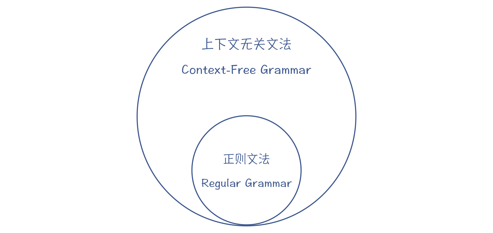
图1：正则文法是上下文无关文法的子集
你可以试一下，把上一讲用到的正则表达式“a[a-zA-Z0-9]*bc”写成产生式的格式，它就符合线性文法的特点。
S0 -> aS1bc
S1 -> [a-zA-Z0-9]S1
S1 -> ε
但对于常见的语法规则来说，正则文法是不够的。比如，你最常用的算术表达式的规则，就没法用正则文法表示，因为有的产生式需要包含两个非终结符（如“add + mul”）。你可以试试看，能把“2+3”“2+3*5”“2+3+4+5”等各种可能的算术表达式，用一个正则表达式写出来吗？实际是不可能的。
add -> add + mul
add -> mul
mul -> mul * pri
mul -> pri
好，现在你已经了解了上下文无关文法，以及它与正则文法的区别。可是，为什么它会叫“上下文无关文法”这样一个奇怪的名字呢？难道还有上下文相关的文法吗？
答案的确是有的。举个例子来说，在高级语言里，本地变量必须先声明，才能在后面使用。这种制约关系就是上下文相关的。
不过，在语法分析阶段，我们一般不管上下文之间的依赖关系，这样能使得语法分析的任务更简单。而对于上下文相关的情况，则放到语义分析阶段再去处理。
好了，现在你已经知道，用上下文无关文法可以描述程序的语法结构。学习编译原理，阅读和书写语法规则是一项基本功。针对高级语言中的各种语句，你要都能够手写出它们的语法规则来才可以。
接下来，我们就要依据语法规则，编写语法分析程序，把Token串转化成AST。语法分析的算法有很多，但有一个算法也是你必须掌握的一项基本功，这就是递归下降算法。
递归下降算法（Recursive Descent Parsing）
递归下降算法其实很简单，它的基本思路就是按照语法规则去匹配Token串。比如说，变量声明语句的规则如下：
varDecl : types Id varInitializer？ ';' ; //变量声明
varInitializer : '=' exp ; //变量初始化
exp : add ; //表达式
add : add '+' mul | mul; //加法表达式
mul : mul '*' pri | pri; //乘法表达式
pri : IntLiteral | Id | '(' exp ')' ; //基础表达式
如果写成产生式格式，是下面这样：
varDecl -> types Id varInitializer ';'
varInitializer -> '=' exp
varInitializer -> ε
exp -> add
add -> add + mul
add -> mul
mul -> mul * pri
mul -> pri
pri -> IntLiteral
pri -> Id
pri -> ( exp )
而基于这个规则做解析的算法如下：
匹配一个数据类型(types)
匹配一个标识符(Id)，作为变量名称
匹配初始化部分(varInitializer)，而这会导致下降一层，使用一个新的语法规则：
匹配一个等号
匹配一个表达式(在这个步骤会导致多层下降：exp->add->mul->pri->IntLiteral)
创建一个varInitializer对应的AST节点并返回
如果没有成功地匹配初始化部分，则回溯，匹配ε，也就是没有初始化部分。
匹配一个分号
创建一个varDecl对应的AST节点并返回
用上述算法解析“int a = 2”，就会生成下面的AST：
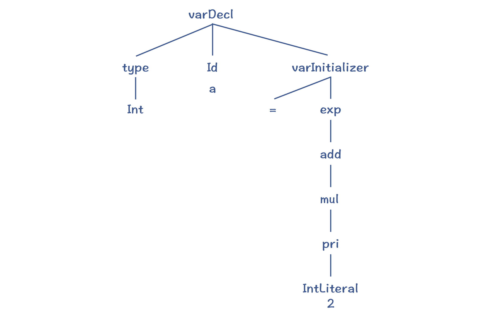
图2：“int a = 2”对应的AST
那么总结起来，递归下降算法的特点是：
- 对于一个非终结符，要从左到右依次匹配其产生式中的每个项，包括非终结符和终结符。
- 在匹配产生式右边的非终结符时，要下降一层，继续匹配该非终结符的产生式。
- 如果一个语法规则有多个可选的产生式，那么只要有一个产生式匹配成功就行。如果一个产生式匹配不成功，那就回退回来，尝试另一个产生式。这种回退过程，叫做回溯（Backtracking）。
所以说，递归下降算法是非常容易理解的。它能非常有效地处理很多语法规则，但是它也有两个缺点。
第一个缺点，就是著名的左递归（Left Recursion）问题。比如，在匹配算术表达式时，产生式的第一项就是一个非终结符add，那么按照算法，要下降一层，继续匹配add。这个过程会一直持续下去，无限递归下去。
add -> add + mul
所以，递归下降算法是无法处理左递归问题的。那么有什么解决办法吗？
你可能会说，把产生式改成右递归不就可以了吗？也就是add这个递归项在右边：
add -> mul + add
这样确实可以避免左递归问题，但它同时也会导致结合性的问题。
举个例子来说，我们按照上面的语法规则来解析“2+3+4”这个表达式，会形成如下所示的AST。
图3：结合性错误的AST
它会先计算“3+4”，而不是先计算“2+3”。这破坏了加法的结合性规则，加法运算本来应该是左结合的。
其实有一个标准的方法，能避免左递归问题。我们可以改写原来的语法规则，也就是引入add'，把左递归变成右递归：
add -> mul add'
add' -> + mul add' | ε
接下来，我们用刚刚改写的规则再次解析一下 “2+3+4”这个表达式，会得到下图中的AST：
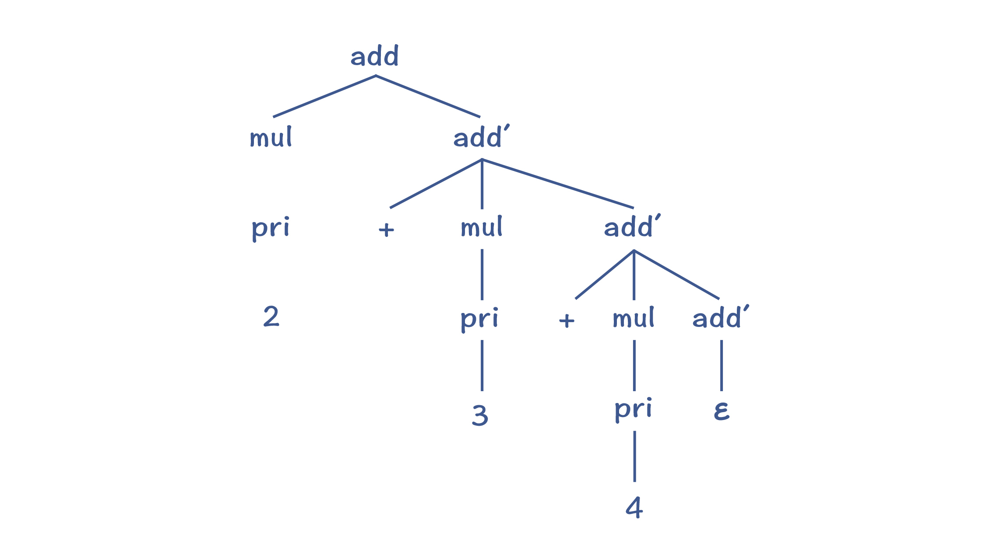
图4：基于改写后的文法所生成的AST
你能看出，这种改写方法虽然能够避免左递归问题，但由于add'的规则是右递归的，采用标准的递归下降算法，仍然会出现运算符结合性的错误。那么针对这点，我们有没有解决办法呢？
有的，方法就是把递归调用转化成循环。这里利用了很多同学都知道的一个原理，即递归调用可以转化为循环。
其实我把上面的规则换成用EBNF方式来表达就很清楚了。在EBNF格式里，允许用“*”号和“+”号表示重复：
add ： mul ('+' mul)* ；
所以说，对于('+'mul)*这部分，我们其实可以写成一个循环。而在循环里，我们可以根据结合性的要求，手工生成正确的AST。它的伪代码如下：
左子节点 = 匹配一个mul
while(下一个Token是+){
消化掉+
右子节点 = 匹配一个mul
用左、右子节点创建一个add节点
左子节点 = 该add节点
}
采用上面的算法，就可以创建正确的AST，如下图所示：
图5：结合性正确的AST
递归下降算法的第二个缺点，就是当产生式匹配失败的时候，必须要“回溯”，这就可能导致浪费。
这个时候，我们有个针对性的解决办法，就是预读后续的一个Token，判断该选择哪个产生式。
以stmt变元为例，考虑它的三个产生式，分别是变量声明语句、表达式语句和return语句。那么在递归下降算法中，我们可以在这里预读一个Token，看看能否根据这个Token来选择某个产生式。
经过仔细观察，你发现如果预读的Token是Int或Long，就选择变量声明语句；如果是IntLiteral、Id或左括号，就选择表达式语句；而如果是Return，则肯定是选择return语句。因为这三个语句开头的Token是不重叠的，所以你可以很明确地做出选择。
如果我们手写递归下降算法，可以用肉眼识别出每次应该基于哪个Token，选择用哪个产生式。但是，对于一些比较复杂的语法规则，我们要去看好几层规则，这样比较辛苦。
那么能否有一个算法，来自动计算出选择不同产生式的依据呢？当然是有的，这就是LL算法家族。
LL算法：计算First和Follow集合
LL算法的要点，就是计算First和Follow集合。
First集合是每个产生式开头可能会出现的Token的集合。就像stmt有三个产生式，它的First集合如下表所示。
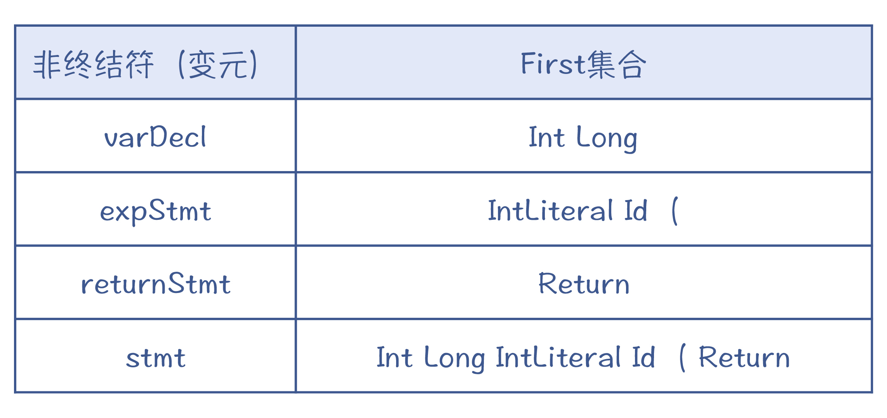
而stmt的First集合，就是三个产生式的First集合的并集，也是Int Long IntLiteral Id ( Return。
总体来说，针对非终结符x，它的First集合的计算规则是这样的：
- 如果产生式以终结符开头，那么把这个终结符加入First(x)；
- 如果产生式以非终结符y开头，那么把First(y)加入First(x);
- 如果First(y)包含ε，那要把下一个项的First集合也加入进来，以此类推；
- 如果x有多个产生式，那么First(x)是每个产生式的并集。
在计算First集合的时候，具体可以采用“不动点法”。相关细节这里就不展开了，你可以参考示例程序FirstFollowSet类的CalcFirstSets()方法，运行示例程序能打印各个非终结符的First集合。
不过，这样是不是就万事大吉了呢？
其实还有一种特殊情况我们需要考虑，那就是对于某个非终结符，它自身会产生ε的情况。比如说，示例文法中的blockStmts，它是可能产生ε的，也就是块中一个语句都没有。
block : '{' blockStmts '}' ; //语句块
blockStmts : stmt* ; //语句块中的语句
stmt = varDecl | expStmt | returnStmt; //语句
语法解析器在这个时候预读的下一个Token是什么呢？是右花括号。这证明blockStmts产生了ε，所以才读到了后续跟着的花括号。
对于某个非终结符后面可能跟着的Token的集合，我们叫做Follow集合。如果预读到的Token在Follow中，那么我们就可以判断当前正在匹配的这个非终结符，产生了ε。
Follow的算法也比较简单，以非终结符x为例：
- 扫描语法规则，看看x后面都可能跟着哪些符号；
- 对于后面跟着的终结符，都加到Follow(x)集合中去；
- 如果后面是非终结符y，就把First(y)加Follow(x)集合中去；
- 最后，如果First(y)中包含ε，就继续往后找；
- 如果x可能出现在程序结尾，那么要把程序的终结符$加入到Follow(x)中去。
这样在计算了First和Follow集合之后，你就可以通过预读一个Token，来完全确定采用哪个产生式。这种算法，就叫做LL(1)算法。
LL(1)中的第一个L，是Left-to-right的缩写，代表从左向右处理Token串。第二个L，是Leftmost的缩写，意思是最左推导。最左推导是什么呢？就是它总是先把产生式中最左侧的非终结符展开完毕以后，再去展开下一个。这也就相当于对AST从左子节点开始的深度优先遍历。LL(1)中的1，指的是预读一个Token。
LR算法：移进和规约
前面讲的递归下降和LL算法，都是自顶向下的算法。还有一类算法，是自底向上的，其中的代表就是LR算法。
自顶向下的算法，是从根节点逐层往下分解，形成最后的AST；而LR算法的原理呢，则是从底下先拼凑出AST的一些局部拼图，并逐步组装成一棵完整的AST。所以，其中的关键之处在于如何“拼凑”。
假设我们采用下面的上下文无关文法，来推演一个实例，具体语法规则如下所示：
start->add
add->add+mul
add->mul
mul->mul*pri
mul->pri
pri->Int
pri->(add)
如果用于解析“2+3*5”，最终会形成下面的AST：
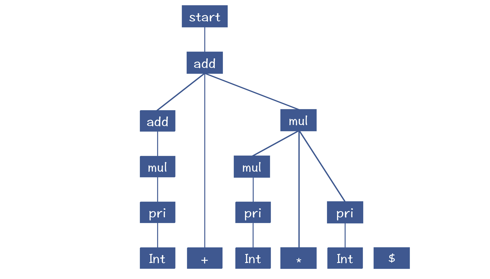
图6：2+3*5对应的AST
那算法是怎么从底部凑出这棵AST来的呢？
LR算法和LL算法一样，也是从左到右地消化掉Token。在第1步，它会取出“2”这个Token，放到一个栈里，这个栈是用来组装AST的工作区。同时，它还会预读下一个Token，也就是“+”号，用来帮助算法做判断。
在下面的示意图里，我画了一条橙色竖线，竖线的左边是栈，右边是预读到的一个Token。在做语法解析的过程中，竖线会不断地往右移动，把Token放到栈里，这个过程叫做“移进”（Shift）。
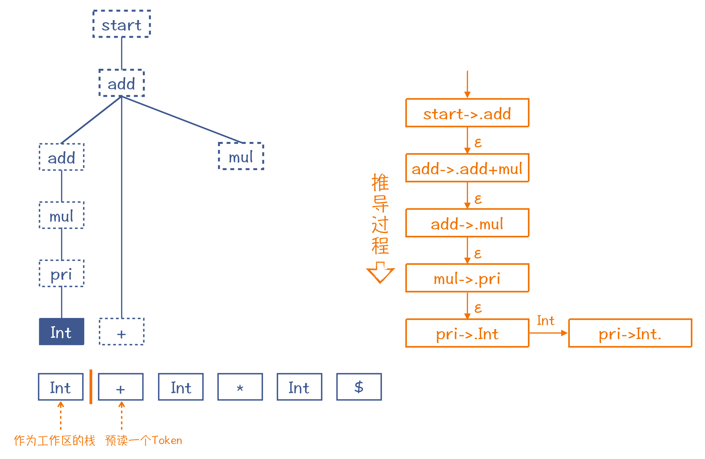
图7：第1步，移进一个Token
注意，我在图7中还用虚线框推测了AST的其他部分。也就是说，如果第一个Token遇到的是整型字面量，而后面跟着一个+号，那么这两个Token就决定了它们必然是这棵推测出来的AST的一部分。而图中右边就是它的推导过程，其中的每个步骤，都使用了一个产生式加了一个点（如“.add”）。这个点，就相当于图中左边的橙色竖线。
所以你就可以根据这棵假想的AST，也就是依据假想的推导过程，给它反推回去。把Int还原为pri。这个还原过程，就叫做“规约”（Reduce）。工作区里的元素也随之更新成pri。
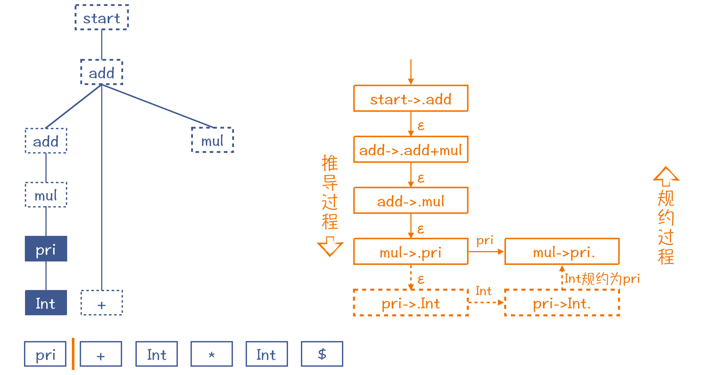
图8：第2步，Int规约为pri
按照这样的思路，不断地移进和规约，这棵AST中推测出来的节点会不断地被证实。而随着读入的Token越来越多，这棵AST也会长得越来越高，整棵树变得更大。下图是推导过程中间的一个步骤。
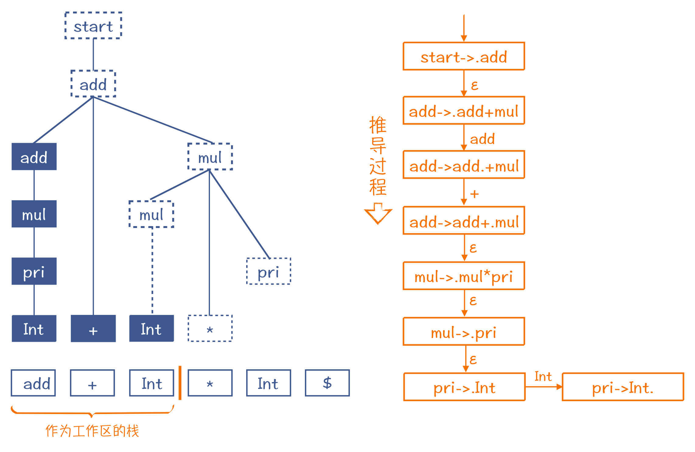
图9：移进和规约过程中的一个步骤
最后，整个AST构造完毕，而工作区里也就只剩了一个Start节点。
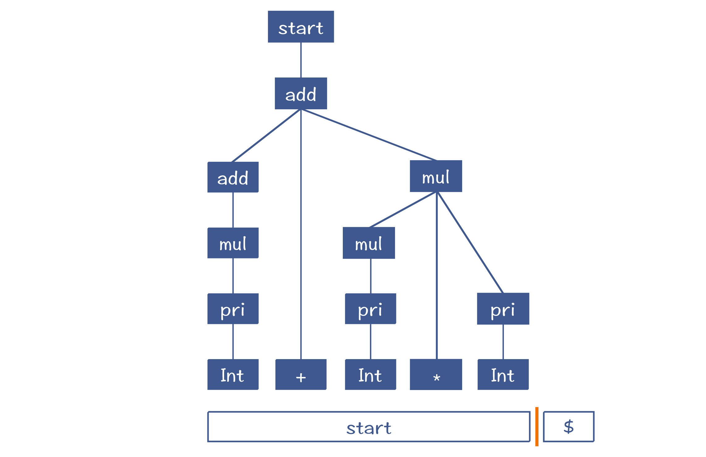
图10：最后一步，add规约为start
通过上面的介绍，你应该已经建立了对LR算法的直觉认识。如果要把这个推导过程写成严密的算法，你可以参考《编译原理之美》的第18讲。
从示例中，你应该已经看出来了，相对于LL算法，LR算法的优点是能够处理左递归文法。但它也有缺点，比如不利于输出全面的编译错误信息。因为在没有解析完毕之前，算法并不知道最后的AST是什么样子，所以也不清楚当前的语法错误在整体AST中的位置。
最后我再提一下LR的意思，来帮你更完整地理解LR算法。L还是代表从左到右读入Token，而R是最右推导（Rightmost）的意思。我把“2+3*5”最右推导的过程写在了下面，而如果你从最后一行往前一步步地看，它恰好就是规约的过程。
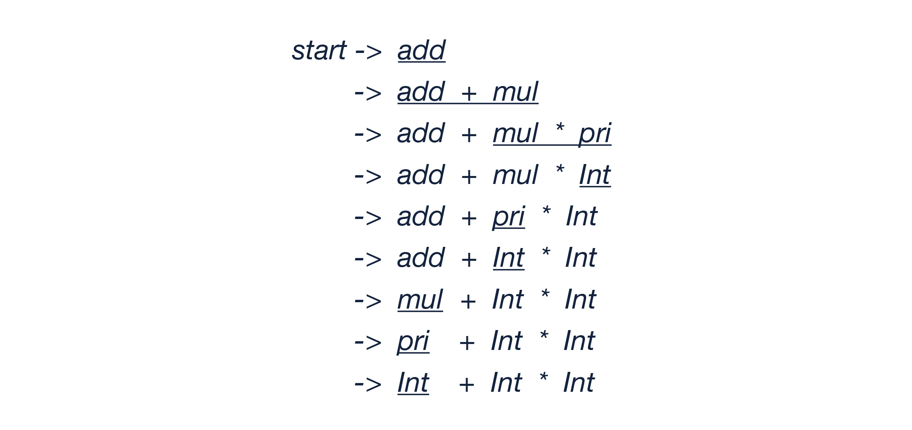
如果你见到LR(k)，那它的意思就是会预读k个Token，我们在示例中采用的是LR(1)。
课程小结
今天花了一讲的时间，把语法分析的要点给你讲解了一下。
对于上下文无关的文法，你要知道产生式、非终结符、终结符、EBNF这几个基本概念，能够熟练阅读各种语言的语法规则，这是一个基本功。
递归下降算法是另一项基本功，所以也一定要掌握。你要注意，递归下降是深度优先的，只有最左边的子树都生成完了，才会往右生成它的兄弟节点。有的同学会在没有把左侧的非终结符匹配完毕的情况下，就开始匹配右边的项，从而不自觉地采用了宽度优先的思路，这是我发现很多同学会容易陷入的一个思维误区。
对于LL算法和LR算法，我只做了简单的讲解，目的是为了帮助你建立直观的理解。我们在后面的课程中，还会遇到使用它们的实际例子，到时你可以与这一讲的内容相互印证。
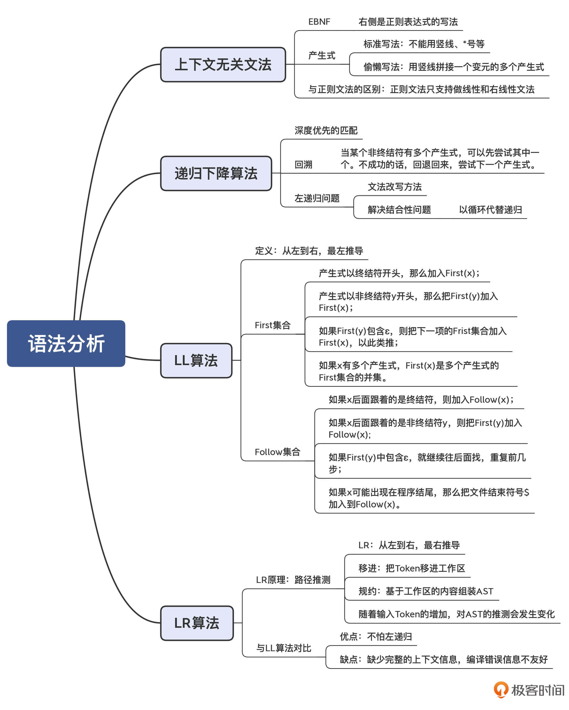
一课一思
你可以计算一下示例文法中block、blockStmts、stmt、varDecl、returnStmt和expStmt的First和Follow集合吗？这样，你也可以熟悉一下First和Follow集合的计算方法。
欢迎在留言区分享你的答案。如果觉得有收获，也欢迎你把这节课分享给你的朋友。
参考资料
1.线性文法（Linear Grammar）：参见Wikipedia。- 2.左递归及其消除方法：参见Wikipedia。
© 2019 - 2023 Liangliang Lee. Powered by gin and hexo-theme-book.